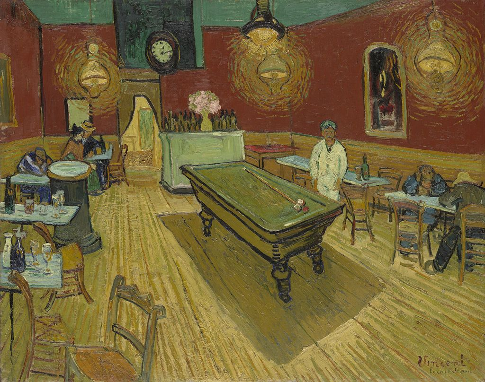

<head>
<meta charset="UTF-8" />
<meta name="keywords" content="drawing, painting" />
<meta name="description" content="drawings by Sunjy" />
<title>Sunjy</title>
<link rel="shortcut icon" type="image/x-icon" href="../../mImages/mCommon/favicon.ico" media="screen" />
<link rel="stylesheet" type="text/css" href="../../mCsses/mCommon/mCssA.css" />
<link rel="stylesheet" type="text/css" href="../../mCsses/mCommon/mCssB.css" />
<link rel="stylesheet" type="text/css" href="../../mCsses/mCommon/mCssC.css" />
<link rel="stylesheet" type="text/css" href="../../mCsses/mCommon/mCssD.css" />
<link rel="stylesheet" type="text/css" href="../../mCsses/mContent/mCssA.css" />
<link rel="stylesheet" type="text/css" href="../../mCsses/mContent/mCssB.css" />
<link rel="stylesheet" type="text/css" href="../../mCsses/mContent/mCssC.css" />
<link rel="stylesheet" type="text/css" href="../../mCsses/mContent/mCssD.css" />
</head>
<script type="text/javascript" src="../../mScripts/mContent/mContentAA.js" /></script>
<script type="text/javascript" src="../../mScripts/mContent/mContentAB.js" /></script>
<script type="text/javascript" src="../../mScripts/mContent/mContentAC.js" /></script>
<script type="text/javascript" src="../../mScripts/mContent/mContentAD.js" /></script>
<script type="text/javascript"></script> 
<script type="text/javascript">
document.write('<div class="mImgAbsolute"></div>');
/*
document.write('<p class="mFontSizeBColor" />From a white paper...</p>');
document.write('<table class="center"><tr><td>');
document.write('');
document.write('</td></tr></table>');
*/
</script>


<script type="text/javascript">
document.write('<p class="mFontSizeBColor" />The Night Café</p>');
document.write('<p class="mFontSizeSColor" />By Vincent van Gogh. “The Night Café” depicts the interior of Café de la Gare in Arles. Five customers are sitting at tables, and a waiter in a light coat is standing and facing the viewer. <br><br>A half-curtained doorway in the center background is leading to the private quarters.  The title of this painting is inscribed lower right beneath the signature.<br><br>In highly contrasting and vivid colors, the paint is applied thickly, with the perspective leading toward the door in the back.<br><br>Van Gogh stayed up for three consecutive nights to paint the picture, sleeping during the day. Van Gogh wrote to his brother about the Café:<br><br>“… staying open all night. “Night prowlers” can take refuge there when they have no money to pay for lodging or are too drunk to be taken in.”<br><br>Van Gogh depicted very few café scenes, but his most famous is “Cafe Terrace at Night,” showing outdoor tables, a street scene, and the night sky, which was also painted in Arles at about the same period in his life.</p>');
document.write('<table class="center" /><tr><td>');
document.write('<br>A half-curtained doorway in the center background is leading to the private quarters.  The title of this painting is inscribed lower right beneath the signature.<br><br>In highly contrasting and vivid colors, the paint is applied thickly, with the perspective leading toward the door in the back.<br><br>Van Gogh stayed up for three consecutive nights to paint the picture, sleeping during the day. Van Gogh wrote to his brother about the Café:<br><br>“… staying open all night. “Night prowlers” can take refuge there when they have no money to pay for lodging or are too drunk to be taken in.”<br><br>Van Gogh depicted very few café scenes, but his most famous is “Cafe Terrace at Night,” showing outdoor tables, a street scene, and the night sky, which was also painted in Arles at about the same period in his life." />');
document.write('</td></tr></table>');
</script>


